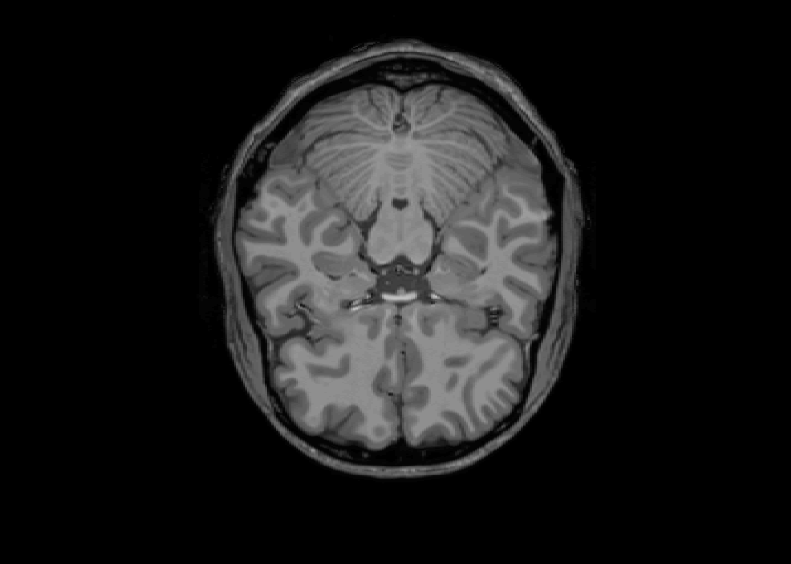
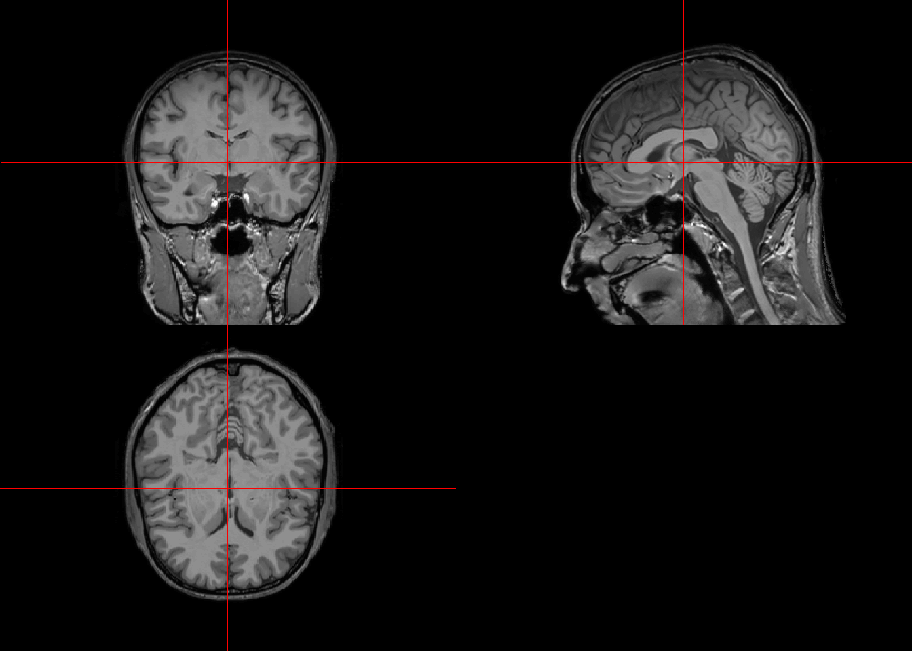

Capítulo 9 Bases de Datos Médicas de Interés para Éste Curso
9.1 Diabetes en Indios Pima
Originalmente del National Institute of Diabetes and Digestive and Kidney Disease, el producto final liberado para la comunidad de aprendizaje automatizado contiene únicamente instancias de mujeres de, por lo menos, 21 años de edad de la étnia PIMA americana.
Las variables se pueden interpretar como sigue:
- pregnant: Número de embarazos tenidos.
- glucose: Concentración de glucosa en plasma a las 2 horas de iniciado un test de tolerancia a la glucosa.
- pressure: Presión arterial diastólica en mm/Hg
- triceps: Medición de pliegue cutáneo en región del tríceps en milímetros.
- insulin: Concentración sérica de insulina a las 2 horas de iniciado el test.
- mass: Índice de masa corporal calculado con la siguiente fórmula: \(\frac{peso \space en \space kg}{(altura \space en \space metros)^2}\)
- pedigree
- age: Edad en años.
- diabetes: Variable objetivo indicando si el paciente tiene o no tiene diabetes.
El objetivo de ésta base de datos es el ser utilizada para realizar predicciones de enfermedad con las variables predictoras proporcionadas a través de estadística computacional.
9.2 Heart Disease
Generada entre doctores de centros médicos en Budapest, Suiza, y Cleveland. Ésta base de datos contiene en su totalidad 76 atributos, aunque los trabajos publicados que la mencionan han utilizado los 14 atributos provenientes de Cleveland.
Los 14 atributos usados por otros autores son:
- age
- sex
- cp: tipo de dolor en el pecho
- Angina típica
- Agina atípica
- Dolor no anginoso
- Asintomático
- trestbps: presión arterial en reposo registrada en mm/Hg al ser admitido al hospital
- chol: colesterol sérico en mg/dl.
- fbs: glucosa sérica en ayuno >120 mg/dl. 1 = verdadero, 2 = falso.
- restecg: Resultados del electrocardograma en reposo.
- 0 = normal
- 1 = anormalidades de onda T o segmento ST (inversiones o depresiones >0.05mV)
- 2 = evidencia probable o definitiva de hipertrofia de ventrículo izquierdo por criterios de Estes.
- thalach: máxima frecuencia cardiaca alcanzada.
- exang: angina inducida por el ejercicio. 1 = Si, 2 = No)
- oldpeak: depresión del segmento ST en el ECG inducido por ejercicio en contraste a reposo.
- slope: pendiente del segmento ST en ECG durante ejercicio.
- Pendiente positiva (hacia arriba).
- Sin pendiente (plano).
- Pendiente negativa (hacia abajo).
- ca: número (0-3) de vasos mayores coloreados por fluoroscopía
- thal:
- 3 = normal.
- 6 = defecto estático.
- 7 = defecto reversible.
- num: Variable objetivo, diagnóstico de cardiopatía por angiografía.
- 0 = <50% de estrechamiento de diámetro del vaso sanguíneo.
- 1 = >50% de estrechamiento de diámetro del vaso sanguíneo.
9.3 Datos de Resonancias Magnéticas del cerebro
library(oro.nifti)## oro.nifti 0.7.2##
## Attaching package: 'oro.nifti'## The following object is masked from 'package:pracma':
##
## magicimg <- readNIfTI("data/Template-T1-U8-RALPFH-BR.nii.gz", reorient = FALSE)
class(img)## [1] "nifti"
## attr(,"package")
## [1] "oro.nifti"dim(img)## [1] 182 512 5129.3.1 Visualizaciones iniciales
9.3.1.1 Todas las proyecciones
image(img)9.3.1.2 Visualizando el slice 225
image(img, z = 225, plot.type = "single")
9.3.1.3 Proyecciones ortográficas
orthographic(img)
Gorman, R Paul, and Terrence J Sejnowski. 1988. “Analysis of Hidden Units in a Layered Network Trained to Classify Sonar Targets.” Neural Networks 1 (1). Elsevier: 75–89.
Mirjalili, Seyedali, and Andrew Lewis. 2013. “S-Shaped Versus V-Shaped Transfer Functions for Binary Particle Swarm Optimization.” Swarm and Evolutionary Computation 9. Elsevier: 1–14.